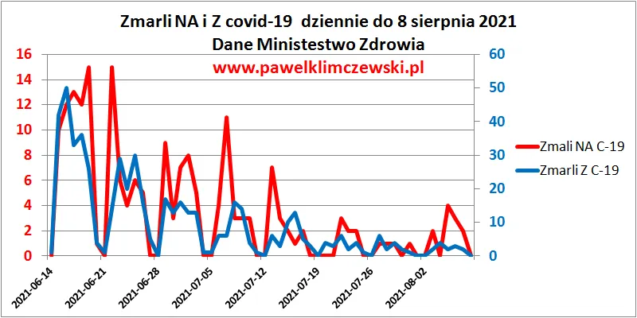

Wakacje w pełni! Minister Śmierci puszcza sygnał.
Wiemy już od roku, że dane o śmiertelności z powodu covid-19 nie są wiarygodne. Szczególnie dane Ministerstwa Śmierci z wiosny 2021 potwierdzają tę tezę. Opisałem to szczegółowo w raporcie "Prawdziwa tragedia narodu polskiego 2020/2021- walka z covid-19". Raport do ściągnięcia pod linkiem: https://pawelklimczewski.pl/2021/07/27/__trashed/

Nie zajmowałem Państwa uwagi tymi danymi przez wiele tygodni, bo też nie było powodu. Dane ministra traktujmy wyłącznie jako jego sposób na komunikację ze społeczeństwem. Widać wyraźnie, wbrew naturalnemu kalendarzowi epidemiologicznemu, że w Ministerstwie Śmierci grupa robocza wróciła z lipcowych wakacji i zabrała się do literackiej roboty. W raportach o zgonach pojawiły się dobowo liczby dwucyfrowe, co ma nas przygotować na świetlaną przyszłość. Naród nasz utrudzony, nie przyjmuje eksperymentalnych preparatów genetycznych z taką ochotą, jak zakładają plany i będzie trzeba naród nastraszyć.
Przypominam, że zmarli "Z C-19" to tylko tło oparte o testy, które pokazują "niewiadomo co "do robienia wyniku.
Przed nami rozpoczęcie roku szkolnego, pewnikiem są dzieci, umierające! W pierwszym tomie "Fałszywej pandemii..." szczegółowo opisałem wiekową strukturę zgonów w Płosce w porównaniu ze "zgonami " covidowymi i się okazało, że covid-19 nie miał wiosną 2020 żadnego związku ze śmiertelnością Polaków. Potem tego już szczegółowo nie śledziłem, bo kto by się zajmował danymi od kłamcy! Kłamcy się nie słucha!
W Polsce od wielu, wielu lat na każde 1000 zgonów są dwa zgony nastolatków, tak jest i już. W wiosennej "pierwszej fali" w pierwszym tysiącu "ofiar" covida też było idealnie dwóch nastolatków. Co dzień w Polsce umiera ok. 1500 osób, przed blokadą "służby zdrowia/śmierci" było to 1250 zgonów. Co dzień mamy więc ok. 3 zgony nastolatków, zrobienie pozytywnego testu takiemu nieszczęśnikowi, to jak zrobienie testu kozie czy papai: Wyjdzie plus, gdy ojczyzna wzywa do zadłużenia kraju na kolejne miliardy w Banku Światowym !
Dlatego wszystkim rozsądnym ludziom życzę odcięcia się od przekazu mainstreamu i zajęciem się prawdziwą sytuacją na świecie https://pawelklimczewski.pl/2021/08/07/wydanie-specjalne-newslettera-rosja-dzis-wraca-do-afganistanu/ ,
Paweł Klimczewski